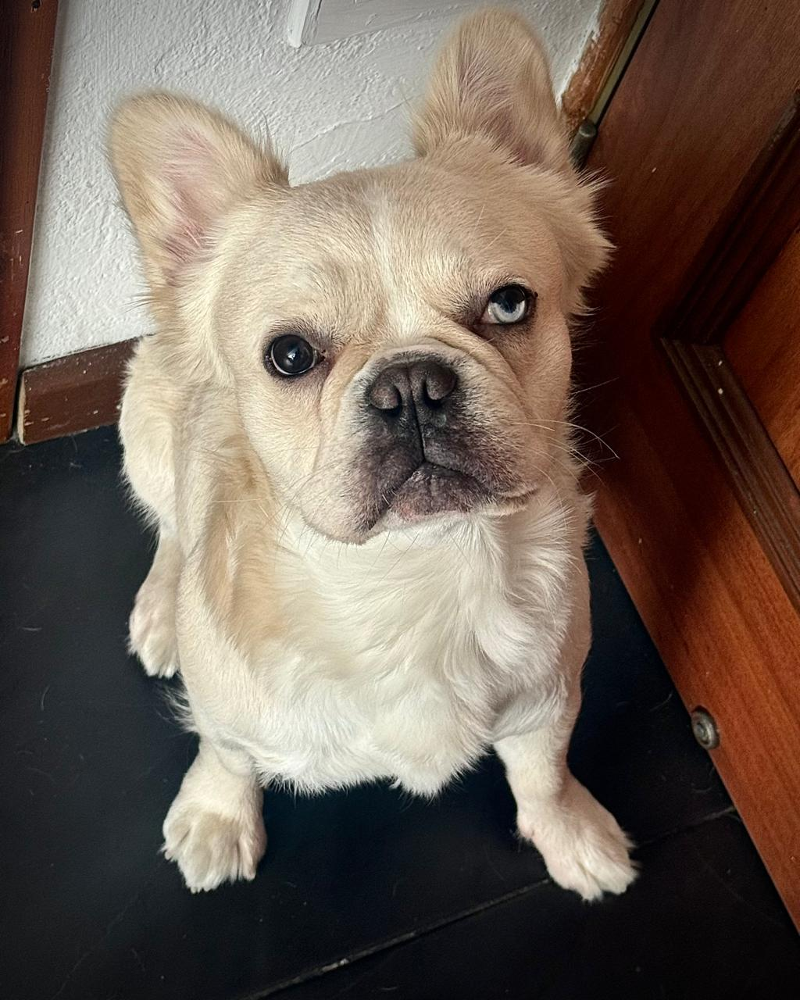

Open to internships & collaborations
x19marlon
> _
Software engineer building backends, distributed systems and robots — and curious about everything that happens under the hood.
// 01 · whoami
Engineer by training, tinkerer by nature.
$ cat profile.json
{
"name": "Marlon Restrepo",
"based_in": "Bogotá, CO",
"studies": "Systems Engineering @ Javeriana",
"focus": ["backend", "distributed", "robotics"],
"speaks": ["es", "en"],
"status": "probably debugging"
}I'm a Systems Engineering student at Pontificia Universidad Javeriana who likes to understand how things work all the way down — from a ROS node moving a robotic arm to a message travelling through a Kafka topic.
Right now I'm diving deep into backend services, distributed architectures, cloud and DevOps. I care about software that is clean, scalable and efficient — and about leaving teams better than I found them.
- 3leadership roles
- 5+languages in daily use
- ∞bugs squashed
// 02 · toolbox
The stack I reach for.
Frameworks & runtimes
Data
Cloud & tooling
// 03 · leadership & impact
Where I lead and teach.
-
IEEE Computer Society · Javeriana
Chairman
Lead the student chapter and coordinate its technical initiatives, workshops and events.
-
IEEE Robotics & Automation Society · Javeriana
Vice President
Support robotics projects, technical initiatives and the chapter's digital presence.
-
Pontificia Universidad Javeriana
Teaching Assistant · Software Fundamentals
Help students turn software engineering concepts into working code through hands-on support.
// 04 · selected work
Things I've built.
01
LeRobot SO-101 · Gabo's Arm
Digital twin of the 6-DOF SO-101 robotic arm in ROS 2 and Gazebo. Modular packages for the URDF/Xacro description, the Gz ↔ ROS 2 bridge, a custom ros2_control hardware interface and keyboard teleoperation, with live visualization in RViz2.
View repo →02
EduTrace
Formative feedback platform for intro C++ courses. Students code and compile in the browser inside a sandbox; every submission runs against the teacher's test cases, and a local AI drafts feedback that the teacher reviews before it reaches the student — the AI proposes, the teacher decides.
View repo →03
Next up…
Currently experimenting, breaking things and building something new. Stay tuned.
// 05 · offline mode
Beyond the code.
🎮League of Legends — chasing Diamond
🎧Always hunting for new music
🎬Movies, movies and more movies
🤖Robots — apparently a hobby too

// co-pilot.exe
Migao
Fluffy cream-colored French bulldog and official Senior Debugging Supervisor. Rocks heterochromia — one brown eye for reviewing code, one blue eye for spotting bugs — and that skeptical look you get right before a failed deploy.
- Code reviews
- ∞
- Bugs found
- 0
- Treats requested
- 9 999+
// 06 · ping me
Let's build something.
Always up for a conversation about software, robotics, distributed systems or a good idea.